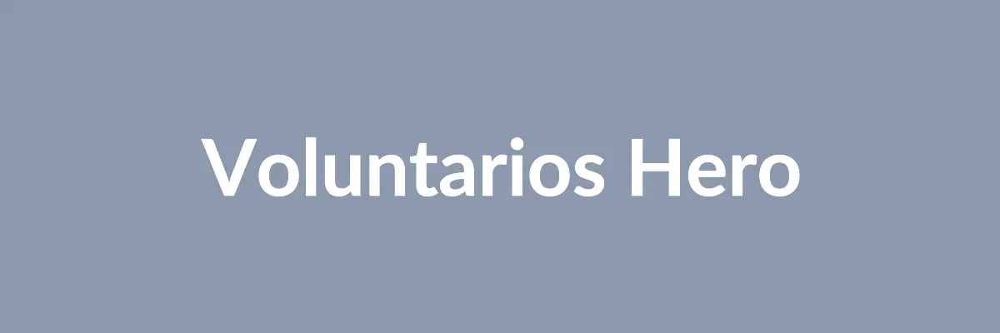

Seja um Voluntário ConectaMais!
Sua energia e tempo são muito valiosos para nós. Junte-se à nossa equipe de voluntários e ajude a transformar vidas e comunidades. Temos diversas áreas onde você pode atuar, de acordo com suas habilidades e disponibilidade.

Como Funciona?
1. Preencha o Formulário
Conte-nos um pouco sobre você e suas áreas de interesse.
2. Entrevista
Nossa equipe entrará em contato para uma breve conversa e alinhamento.
3. Capacitação
Oferecemos treinamentos para que você se sinta preparado para sua função.
4. Comece a Ajudar!
Integre-se aos nossos projetos e faça a diferença na vida de muitas pessoas.
Formulário de Inscrição
Depoimentos de Voluntários
"Ser voluntário na ConectaMais ONG me trouxe uma nova perspectiva de vida. É gratificante ver o impacto do nosso trabalho."
- Maria Silva"A equipe é incrível e os projetos são muito bem organizados. Recomendo a todos que querem fazer a diferença!"
- João Santos